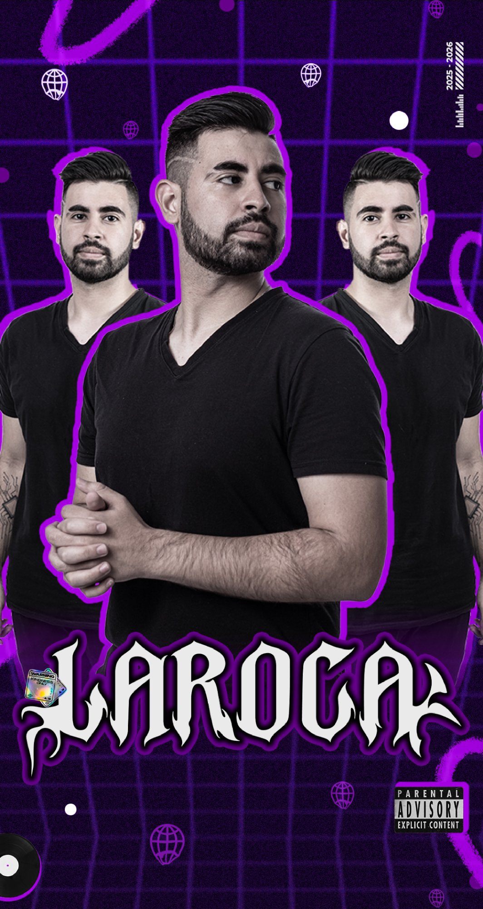

Lucas Laroca Campos começou sua trajetória na música em 2014, quando o funk ainda ecoava pelas ruas de Castro — PR. Desde cedo, percebeu que a pista não era só um lugar para dançar: era onde histórias se transformavam em vibração.
Com um estilo que une o groove do funk com a intensidade do rave funk, Laroca construiu uma identidade sonora única. Cada set é pensado como uma experiência — leitura de pista, energia do público e uma seleção musical que leva o evento a outro nível.
Com mais de 20 shows nacionais abertos e uma agenda em constante expansão, Laroca está consolidado entre os DJs mais promissores da cena funk nacional. Baseado em Castro e Ponta Grossa — PR, mas disponível para todo o Brasil e o mundo.
